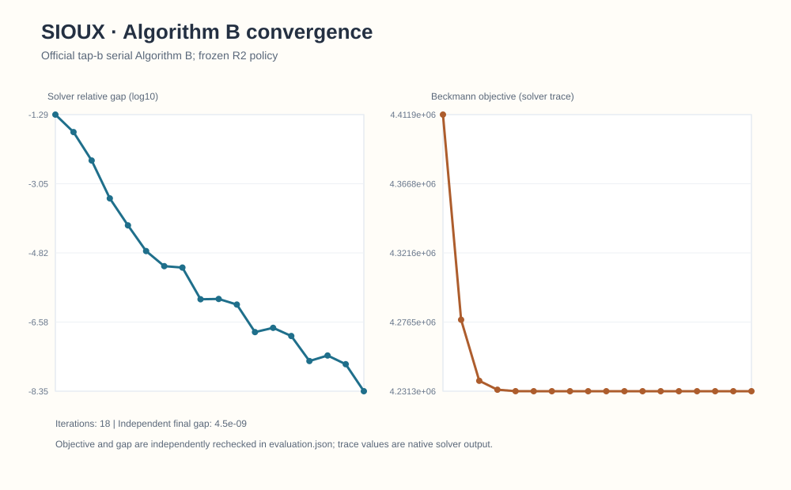
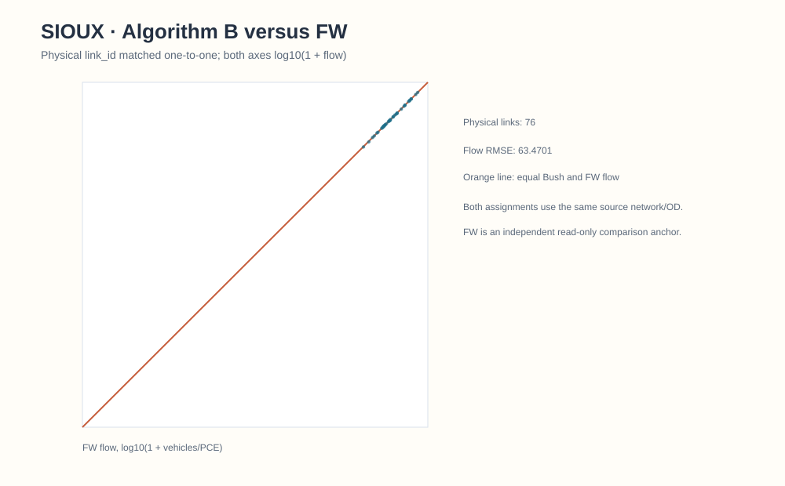
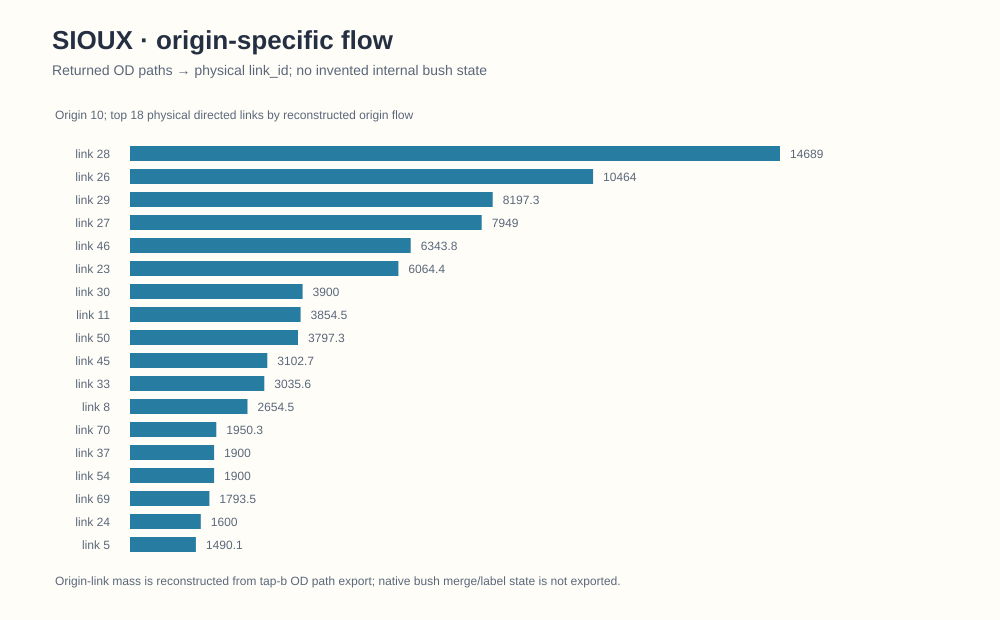
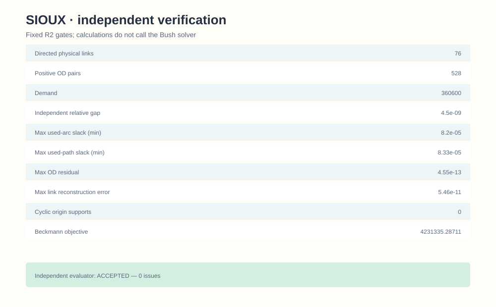

Sioux Falls / official TAPLab–tap-b Algorithm B
1. Problem contract and frozen policy
This is the classic static Sioux Falls BPR user-equilibrium instance: 24 physical nodes, 76 directed links, 528 positive vehicle OD pairs, and 360,600 vehicles of fixed demand. It is not either of the 200/250-OD finite space–time CG selections. The R2 policy fixes a 1e-8 solver gap, 1e-4 independent gap gate, 0.05-minute used-arc/path slack gate, 1,800-second runtime cap, and BPR/Beckmann objective in vehicle-minutes. Shared method and policy.
2. Solver and adapter path
The official spartalab/tap-b Algorithm B executable at commit 040135a20c771fbb84766df6a97cff981fa5df4b produced the accepted R2 run. A separate R2.1 audit at TAPLab commit 081e44a0dd451c549d6903933516bccb4166bbd0 exercised TAPLab's official registered tapb CLI adapter and direct callable taplab.adapters.tapb.solve. Both reproduced the accepted R2 physical-link flows exactly; taplab verify certified the standard output. The official adapter does not export the OD paths needed for all R2 path-level checks; the accepted R2 independent evaluator record remains the authority for those checks. Adapter routes and caveats.
3. Convergence

Saved R2 solver trace only. The independent final relative gap is 4.49840770553e-9. The R2.1 official-adapter parity run stopped at 18 iterations; its absent explicit 10,000-iteration override was nonbinding, not proof of byte-identical configurations.
4. Physical-link comparison with same-problem FW

The accepted R2 Algorithm B Beckmann objective is 4,231,335.287110682 vehicle-minutes, compared with 4,236,715.14044 vehicle-minutes for the retained historical FW result. The saved physical-link flow RMSE is 63.4701149406 vehicles. This is a same-static-problem numerical comparison, not a runtime speedup or empirical validation. Aggregate Algorithm B link flows.
5. Selected-origin reconstructed flow

Selected-origin flow is reconstructed from exported OD paths. The figure does not expose native Policy Bush merge, approach or backward-label state.
6. Independent verification

The accepted evaluation records 705 exported OD paths, zero cyclic positive-flow origins, max OD residual 4.55e-13, aggregate link mismatch 5.46e-11, max used-arc slack 8.20e-5 minutes, and no issues. The R2.1 official TAPLab parity matrix separately reports zero maximum physical-link-flow difference and a certified taplab verify result. These are distinct checks, not one combined certificate.
7. Reproduction and limits
Official TAPLab CLI commands require the pinned upstream source, its external solver executable and correctly licensed classic Sioux input; this repository does not bundle either upstream tree or executable. The public candidate source and accepted aggregate output support offline inspection. No solver was rerun for this publication update. Neither the static objective nor its figures are comparable to the finite space–time hard-capacity CG objective.